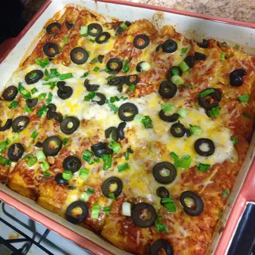

Home
Enchilada Recipe

Description
These enchiladas are beef filled tortilla shells baked in a
creamy chicken soup and cheese sauce
Ingredients
- 1 ½ pounds lean ground beef
- 1 bunch green onions, finely chopped
- 1 diced fresh jalapeno pepper, or to taste
- ¼ cup water
- 1 (1.25 ounce) package taco seasoning mix
- 1 cup plain yogurt
- 1 (10.75 ounce) can condensed cream of chicken soup
- 2 cups shredded mozzarella cheese
- 6 (6 inch) corn tortillas
Steps
- Preheat Oven to 350 degrees
- In a large skillet over medium heat, cook the ground beef, green onion, and jalapeno pepper until the beef is evenly brown.
Stir in water and taco seasoning. Simmer until water has evaporated.
- In a medium bowl,mix together yogurt,condensed soup, and cheese.
- Divide the meat mixture evenly between tortillas.
Place a couple of tablespoons of cheese mixture over meat, and roll up.
Place in a 7x11 inch baking dish. Repeat for each tortilla.
Spoon remaining cheese mixture over the top of the tortillas.
- Bake in preheated oven for 20 to 30 minutes